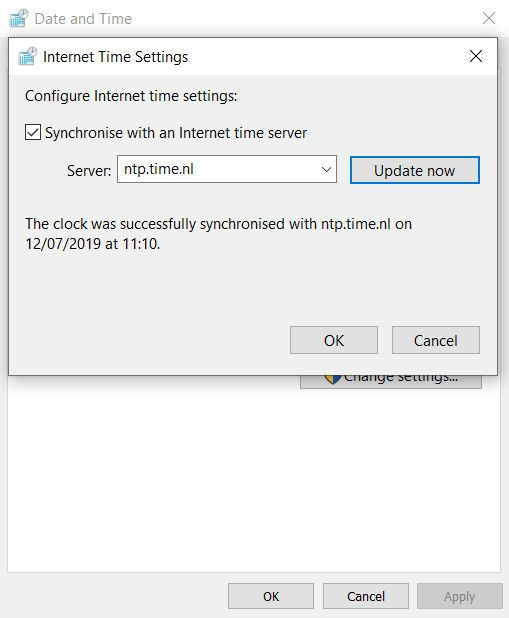

![[Red White Blue ribbon]](img/lint.png "Dutch flag for Dutch service!")
Via dit soort kaders zullen we belangrijke updates over de dienst communiceren. Op dit moment geen updates.
TimeNL
Is een Nederlandse Internet Tijdservice, op basis van NTP (en PTP op verzoek). Op deze website leggen we deze stratum 1 NTP-dienst uit en nodigen we je uit om hem te gaan gebruiken!
Dit is een initiatief van SIDN Labs.
Het Network Time Protocol (NTP) zorgt ervoor dat computers op het internet hun systeemklokken kunnen synchroniseren, zodat ze altijd tot op de milliseconde gelijk lopen. Stabiele en nauwkeurige tijd is essentieel voor de goede werking van allerlei applicaties. Nauwkeurige tijd is cruciaal voor het bepalen van de volgorde waarin gebeurtenissen plaatsvinden en is een fundamenteel aspect van transactie-integriteit, logging / audit, troubleshooting en forensisch onderzoek.
NTP een aanbevolen standaard voor overheden is, volgens de pas-toe-of-leg-uit lijst? De NTP-dienst van SIDN Labs voldoet aan alle aldaar gestelde voorwaarden.
De experts van SIDN Labs hebben deze betrouwbare NTP-dienst opgezet en bieden die bij deze geheel kosteloos aan voor gebruik door iedereen. Op deze website vertellen we je er alles over en leggen we uit hoe je optimaal gebruik kunt maken van deze dienst.
Hoe stel je TimeNL in?
Klik op de gewenste knop hieronder.

Het is mogelijk om hier meerdere NTP-servers op te geven, gescheiden door een komma. Via de commandline kan dit middels systemsetup -setnetworktimeserver "ntp.time.nl" (activeer dit middels /usr/sbin/systemsetup -setusingnetworktime on). Het is ook mogelijk om meerdere NTP-servers rechtstreeks in het bestand /private/etc/ntp.conf op te nemen.



De afbeeldingen hierboven leggen de stappen voor een werkstation uit. Bent je systeembeheerder, kijk dan ook eens op deze link.
# Voorbeeld 1: SIDN's ntp.time.nl (als geprefereerde NTP-server)
server ntp.time.nl iburst prefer
# Voorbeeld 2: SIDN's ntp.time.nl met authenticatie (niet standaard mogelijk, wel evt. op aanvraag)
server ntp.time.nl iburst key 1
Onder Unix/Linux/BSD/etc. zijn verschillende NTP-pakketten beschikbaar, zoals NTP, NTPsec, Chrony, OpenNTPD, enz. Meestal hebben ze een ntp.conf bestand (soms ook wel ntpd.conf genaamd) om de NTP-server in te configureren. Een voorbeeldje hiervan staat hierboven, maar raadpleeg ook de documentatie van het betreffende pakket, want in detail kunnen er verschillen zijn. Zo werkt Ubuntu standaard met timesyncd, die soms in de weg zit als een ander NTP-pakket gewenst is. Maar, wil je geen ander NTP-pakket, dan is aanpassen van timesyncd simpel. Kort gezegd komt dit neer op; /etc/systemd/timesyncd.conf aanpassen. Zie man timesyncd.conf. Er is over dit alles veel informatie vinden op internet. En bij OpenNTPD wordt weight gebruikt in plaats van prefer.
Een andere optie is om niet met een daemon te werken, maar om vanuit CRON met enige regelmaat je server te synchroniseren. In het voorbeeld hieronder gebeurt dit wekelijks (op een vrij willekeurige tijd, dus niet bij minuut '0', om overbelastingspieken te vermijden), maar vaker mag natuurlijk ook. Doe het echter niet vaker dan 1 x per uur (en niet op het hele uur, maar ergens willekeurig).
# ntpdate elke woensdag om 4 minuten over 11:00 u
04 11 * * 3 /usr/sbin/ntpdate ntp.time.nl 2>&1 >/dev/null
#
Cisco IOS and NX-OS:
router# config t
Enter configuration commands, one per line. End with CNTL/Z.
router(config)# no ntp server
router(config)# ntp server ntp.time.nl prefer
router(config)# copy running-config startup-config
In het voorbeeld hierboven is het aan te bevelen om, naast ntp.time.nl, nog enkele andere betrouwbare stratum 1 servers op te nemen (zonder de 'prefer'-toevoeging).
Juniper Junos:
system {
ntp {
server ntp.time.nl prefer;
}
}
In het voorbeeld hierboven is het aan te bevelen om, naast ntp.time.nl, nog ekele andere betrouwbare stratum 1 servers op te nemen (zonder de 'prefer'-toevoeging).
Veelgestelde vragen
Klik op de vraag om het antwoord uit te klappen.
Antwoord: Kort gezegd; omdat het past bij onze rol.
TL;DR: SIDN Labs is het onderzoeksteam van SIDN. Als team staan we pal voor de verbetering en verdere beveiling en innovatie van het internet. Hier dragen wij actief aan bij. Als beheerder van het .nl landendomein hebben we een reputatie hoog te houden. We zorgen ervoor dat iedereen, altijd, de .nl-domeinnamen onder ons beheer kan bereiken op basis van DNS (Domain Name System). Die wereldwijde beschikbaarheid van ruim 5,8 miljoen .nl domeinnamen beschouwen we als een topprioriteit die we heel serieus nemen. Daarom hebben we flink geinvesteerd in kennis, kunde en een degelijke infrastructuur. We beschikken over ruime ervaring met deze zogenaamde 'publieke kern van het internet', waar DNS onder valt. Ook (publiekelijke) NTP is wat ons betreft in zekere zin zo'n infrastrucurele dienst. En die opzetten, onderhouden en belangeloos ter beschikking stellen aan de internetgemeenschap sluit aan bij onze visie en past dan ook prima in ons straatje. We denken dat onze ervaring en kennis prima van pas komt bij het beter op de kaart zetten van het belang van NTP. Om die reden stellen we deze dienst gratis en belangeloos voor iedereen beschikbaar met dezelfde passie en kwaliteit die je van ons gewend bent voor .nl en onze andere diensten.

Antwoord: We hebben hard ons best gedaan om een degelijke en betrouwbare NTP-dienst op te zetten.
Je mag van ons verwachten dat we ons inspannen om een NTP-dienst van goede kwaliteit aan te bieden en te onderhouden. We investeren in kennis en kunde, in infrastructuur, in veiligheid, in moderne versies van software, in support van nieuwe standaarden, in voldoende capaciteit en in monitoring van de kwaliteit. De basisdienst is gratis en voor iedereen beschikbaar, zowel via IPv4 als IPv6. Wil je meer, bijvoorbeeld 'authenticated NTP', dan is dat bespreekbaar maar kunnen we daar eventueel een vergoeding voor vragen. Die keuze is aan ons.
Uiteraard houden we een vinger aan de pols qua misbruik[*]. Dat kunnen we niet tolereren. We behouden ons dus het recht voor om je doormiddel van filtering of rate limiting de toegang tot de dienst geheel of gedeeltelijk te ontzeggen en tevens al het andere te doen om misbruik tegen te gaan, zowel op technisch- als juridisch gebied.
Verder aanvaarden we op geen enkele manier aansprakelijkheid voor het niet (goed) kunnen gebruiken van onze dienst. Je gebruikt hem voor eigen risico en hebt hier dus ook een eigen verantwoordelijkheid. Zorg er dan ook voor dat je waar nodig niet uitsluitend op onze NTP-dienst vertrouwt, maar stel bijvoorbeeld in je eigen stratum 2 servers, ook NTP-diensten van derden in. Heb je daar vragen over, dan adviseren we je graag. Overigens is het goed mogelijk dat we op termijn onze capaciteit gaan uitbreiden en meerdere afzonderlijke NTP-servers zullen gaan aanbieden waarop je dan kunt gaan vertrouwen. We behouden ons wel het recht voor om zonder aankondiging vooraf wijzigingen aan te brengen aan onze dienst. Uiteraard zullen we onder normale omstandigheden ruim vooraf hierover communiceren, via de mailinglijst, deze website en/of via onze social media kanalen.
[*] We hanteren een fair-use beleid. De default-instellingen van de meeste NTP-software zorgen ervoor dat je ruim binnen onze marges blijft. Onder normale omstandigheden hoeven jouw systemen ons niet vaker dan 1 x per 30 minuten of daaromtrent te benaderen. Uiteraard is het geen probleem als je hier bij wijze van uitzondering tijdelijk van wil afwijken. Maar maak het niet te bont.
Antwoord: Eigenlijk niks bijzonders. Bij de vraag over service levels vertellen we je wel het e.e.a. over wat je van ons mag verwachten en als je een leverancier bent van producten waar je een NTP-server in hebt opgenomen, kijk dan ook even bij het antwoord op de vraag daarover. Tja, en verder... nog even dit:
Disclaimer
Ondanks dat we onze (experimentele) diensten met de grootste zorgvuldigheid ontwikkelen, garanderen we niet dat deze dienst (foutloos) werkt. Gebruik van deze dienst is geheel voor eigen risico. SIDN (Labs) is niet aansprakelijk voor eventuele schade die geleden wordt als gevolg van het gebruik, of niet kunnen gebruiken, van haar (experimentele) diensten en we behouden ons het recht voor om deze diensten op ieder gewenst moment, zonder voorafgaande mededeling, te beëindigen.
Antwoord: Natuurlijk is TimeNL niet de enige NTP-dienst die beschikbaar is op het internet. Gelukkig maar. Er zijn behoorlijk wat alternatieven. Toch zijn er wel een aantal punten waarop wij ons onderscheiden van anderen. We sommen ze hier graag even voor je op:
- Verzorgd door SIDN, het vertrouwde bedrijf achter .nl. Een stabiele organisatie met veel operationele kennis in huis.
- Vanuit Nederland, voor Nederland - met zorg ontwikkeld en beheerd door gedreven, nieuwsgierige nerds die oog (en hart) hebben voor 'de publieke kern van het internet'. Kijk voor meer details hierover ook even bij het onderdeel 'kenmerken en achtergrondinformatie' en het antwoord op de vraag 'welke service levels mag ik verwachten?'
- Geen 'big tech' company, maar een toegankelijke partij, die je kunt bellen of mailen met vragen en die (wel) oog heeft voor jouw privacy.
- Veiliger, omdat bij ons in bepaalde gevallen 'authenticated NTP' mogelijk is en time.nl voorzien is van DNSSEC.
- Niet enkel afhankelijk van het Amerikaanse GPS systeem, maar (o.a.) ook gekoppeld aan het Europese Galileo en het Duitse DCF077 signaal.
- Uiteraard, naast IPv4, ook via IPv6 bereikbaar.

 Antwoord: Dit ligt ondermeer aan de bedrijfsgrootte. Je kunt al jouw gebruikers laten communiceren met onze NTP-server. Maar bij grotere aantallen gebruikers kan het zinvol zijn om een eigen, interne NTP-server te configureren en daar de gebruikers hun tijd mee te laten synchroniseren. Dit noemen we een zogenaamde stratum 2 server. Deze kan op zijn beurt de tijd weer synchroniseren aan (o.a.) onze stratum 1 server. Op die manier wordt onze server minder zwaar belast en hoef jij jouw eventuele firewall niet voor elke gebruiker open te zetten. Bij nog grotere omgevingen, kan dit zelfs verder worden uitbreid naar stratum 3.
Antwoord: Dit ligt ondermeer aan de bedrijfsgrootte. Je kunt al jouw gebruikers laten communiceren met onze NTP-server. Maar bij grotere aantallen gebruikers kan het zinvol zijn om een eigen, interne NTP-server te configureren en daar de gebruikers hun tijd mee te laten synchroniseren. Dit noemen we een zogenaamde stratum 2 server. Deze kan op zijn beurt de tijd weer synchroniseren aan (o.a.) onze stratum 1 server. Op die manier wordt onze server minder zwaar belast en hoef jij jouw eventuele firewall niet voor elke gebruiker open te zetten. Bij nog grotere omgevingen, kan dit zelfs verder worden uitbreid naar stratum 3.
In de afbeelding hiernaast wordt dit weergegeven.
De gele pijlen duiden op een directe koppeling met een referentieklok. Onze stratum 1 server heeft dat. De rode pijlen duiden op een netwerkverbinding (over het internet) met 'bovenliggende' servers. Bijvoorbeeld uw stratum 2 of 3 server(s), die hun tijd ophalen bij (onder andere) onze TimeNL stratum 1 server(s).
Verder raden we je aan om je te abonneren op onze mailinglijst, zodat je altijd op de hoogte bent als er ontwikkelingen zijn.
Het is doorgaans een goed idee om niet te vertrouwen op een enkele NTP-server voor tijdsynchronisatie. Totdat wij ons serverpark zullen uitbreiden, raden we je aan om meerdere NTP-servers van andere aanbieders in Nederland te configureren. Zoals bijvoorbeeld (maar niet uitsluitend):
- chime1.surfnet.nl
- time1.esa.int
- ntp.vsl.nl
- ntp.ripe.net
Met symbolen geven we de vermoedelijke (primaire) referentieklok weer van deze systemen, dus voor GNSS (d.w.z. GPS en geen anderen voor zover ons bekend) en voor atoomklok. Er zijn nog veel meer goede NTP-servers, zowel in Nederland als de ons omringende landen. Dus dit was slechts een suggestie.
Antwoord: Het is in strijd met onze gebruikersvoorwaarden om 'ntp.time.nl' hard te coderen in bijvoorbeeld firmware van jouw producten, wanneer deze op grote schaal in de markt worden gezet. Als je iets dergelijks zou willen, neem dan contact met ons op. We hanteren hier namelijk hetzelfde beleid als het NTP-pool project. D.w.z. dat we voor jouw toepassing een speciale naam reserveren ('ntp.merknaam.time.nl') en je wensen samen doorspreken, zodat we beter kunnen anticiperen op het mogelijke risico van capaciteitsoverschrijdingen. Verder raden we je aan om je te abonneren op onze mailinglijst, zodat je altijd op de hoogte bent als er ontwikkelingen zijn.
Antwoord: Vooropgesteld; we zijn geen juristen. Maar we kunnen je melden dat NTP een aanbevolen standaard is op de zogenaamde pas-toe-of-leg-uit lijst van het forum standaardisatie van de overheid. Dat kan betekenen dat je moet zorgen voor goede NTP tijdsynchronisatie in je netwerk en onze dienst kan daar een prima rol bij spelen.
In binnen- en buitenland is of wordt nagedacht over kwaliteitseisen die gelden voor tijdsynchronisatie. Ook in Europees verband en door het Nederlandse Agentschap Telecom zijn eisen geformuleerd. Zie bijvoorbeeld paragraaf 4.15 van dit document. Uiteraard voldoe je met onze NTP-dienst aan de aldaar geformuleerde eisen. Misschien vind je dit document ook interessant. Tja en als jij de expert bent op dit gebied; praat ons dan gerust bij, want we leren graag!
Antwoord: We communiceren over deze dienst via onze mailinglijst, deze website, de SIDN Labs website, via onze social media kanalen en eventueel ook via onze SIDN corporate website.
Antwoord:
- timekeeperssidn.nl
- mailinglijst
- Responsible disclosure
Antwoord: De domeinnaam 'time.nl', waaronder we deze dienst aanbieden, hebben we beveiligd middels DNSSEC. Wanneer jouw systeem dit ondersteunt, kun je erop vertrouwen dat je niet naar het verkeerde IP-adres wordt gestuurd als je naar 'ntp.time.nl' wil gaan. Voor de goede werking van DNSSEC is de juiste tijd trouwens belangrijk. In sommige situaties levert dat een kip/ei probleem op, bijvoorbeeld wanneer systemen zonder 'embedded' Real Time Clock (RTC) opstarten, nog geen besef hebben van de tijd (ze denken dat het 1-1-1970 is), maar toch DNSSEC-validatie willen doen om het IP-adres van 'ntp.time.nl' te vinden (wat dan vervolgens niet lukt). Hiervoor zijn reeds oplossingen bedacht, al blijft het nog wel een punt van aandacht. Voor systemen die wel (ongeveer) al gelijklopen qua tijd, is dit geen probleem.
Antwoord: De standaard (gratis en anonieme) publieke dienst heeft dat niet. Maar authenticatie op basis van 'symmetric keys' behoort wel tot de mogelijkheden bij geregistreerde gebruikers. Laat het ons weten als je hier behoefte aan hebt en waarom. De beslissing of we je dit vervolgens kunnen aanbieden ligt bij ons, evenals de beslissing of we dit kostenloos doen of tegen een geringe vergoeding. We stellen wel wat eisen. Zo gebruiken we bijvoorbeeld geen MD5 algoritme voor onze keys. Ook 'autokey' achten we onvoldoende veilig. Gebruik je OpenNTPd, dan zijn zogenaamde 'TLS constraints' misschien nog wel een optie voor je. Misschien heb je wel eens gehoord van het Network Time Security (NTS) protocol en vraag je je af of wij dit al ondersteunen. Het antwoord is; nog niet, maar we volgen de ontwikkeling van deze standaard nauwlettend, dus hou de berichten hierover in de gaten. Bij een van de andere antwoorden in de FAQ lees je hoe wij met je communiceren.
Antwoord: Network Time Security (NTS) is een standaard in ontwikkeling. Op dit moment bieden we deze nog niet aan in onze productieomgeving. Maar we volgen de ontwikkeling van de standaard nauwgezet en het zou zomaar kunnen dat we een keer een pilot opzetten om van te leren. Hetzelfde geldt trouwens voor 'roughtime', mocht je je dat afvragen.
Antwoord: Het Precision Time Protocol (PTP) is een nog accuratere vorm van tijdsynchronisatie, die hele specifieke toepassingen kent. Standaard bieden wij dit niet aan, maar het behoort wel tot de mogelijkheden. Als je interesse hebt, neem dan contact met ons op.
Antwoord: Hebben we wel overwogen, maar we wilden iets moois maken. Dus niet zoiets simpels als een JavaScript-ding dat feitelijk niet meer laat zien dan de lokale tijd op je computer (zelfs als die niet gelijk loopt), maar juist een klok die laat zien of je PC gelijk of ongelijk loopt. Totdat we erachter kwamen dat onze vrienden bij het Duitse PTB al zoiets gemaakt hadden, waar we eigenlijk niet tegenop kunnen. Oh en is jouw apparaat echt goed 'in sync'? Dan vind je deze stationsklok misschien wel leuk.
Kenmerken en achtergrondinformatie
De NTP-dienst TimeNL van SIDN Labs is een zogenaamde stratum 1 server met verschillende referentieklokken, die zelf heel precieze atoomklokken zijn. Zo synchroniseren we niet alleen aan het Amerikaanse GPS-systeem, maar ook aan het Europese Galileo GNSS. Daarmee verkleinen we de afhankelijkheid van een Amerikaans systeem, waarmee we ons onderscheiden van veel andere NTP-servers. Als eerste backup synchroniseren we daarnaast ook nog aan het Duitse DCF077 radiosignaal. En als tweede backup synchroniseren we nog met atoomklokken in Nederland (onder andere die van VSL in Delft) en België. Onze hardware (voor liefhebbers: we gebruiken de M3000 van de firma Meinberg, die we liefkozend "Arnold" noemen, naar maker en bijnaam van het zilveren zakhorloge van Ruth Belville) zorgt er automatisch voor dat steeds de meest nauwkeurige referentieklok is gekozen. Deze server is, via een goede (multihomed) internetverbinding, bereikbaar via zowel IPv4 als IPv6. Op deze manier zijn we in staat om heel precieze tijdsynchronisatie aan te bieden aan veel gebruikers. Uiteraard hebben we al plannen voor de toekomst. We zullen, indien we daarmee de betrouwbaarheid van onze dienst kunnen vergroten, het aantal NTP-servers uitbreiden en eventueel ontsluiten via BGP anycast, zoals we dat ook al voor de DNS servers van het .nl domein doen.
Goed om te weten is ook nog dat we geen zogenaamde 'leap smearing' doen. Wat misschien ook nog wel interessant is om te weten, is dat ntp.time.nl onderdeel is van het NTP pool project. En zo is er nog veel meer te vertellen, wat we in de toekomst zeker met enige regelmaat zullen doen. Hou dus deze site (en eventueel onze mailinglijst) vooral in de gaten en laat het ons weten als er nu al dingen zijn die je van ons wil weten. Zie ook het onderdeel 'veelgestelde vragen', elders op deze pagina.

Operationele status
'Galileo service degraded' - geen impact voor TimeNL.
NOTICE ADVISORY TO GALILEO USERS (NAGU) 2019025
UPDATE 2019-07-18 08:20 (UTC): Service restored
Start van TimeNL - status OK.
Zie ook de gebruikersstatistieken.